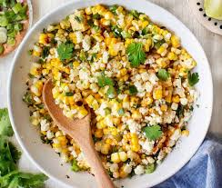

French Bread
Home

Description
This corn slaw recipe is best on top of tacos. It looks nothing like the
picture.
- 1 c Corn
- 1/2 c Sour Cream
- 1/2 c Mayo
- 2 Garlic Cloves
- 1 Jalapeno
- 1 Lime, juice and zest
- 1 tsp Paprika
- 1 tsp Chili Powder
- Salt & Pepper
- Roast corn in a hot pan until lightly charred.
- Set aside to cool.
- Put all other ingredients into a bowl and mix well.
- Add cooled corn, and mix again.
- Let rest in the fridge for at least 2 hours, ideally, overnight.